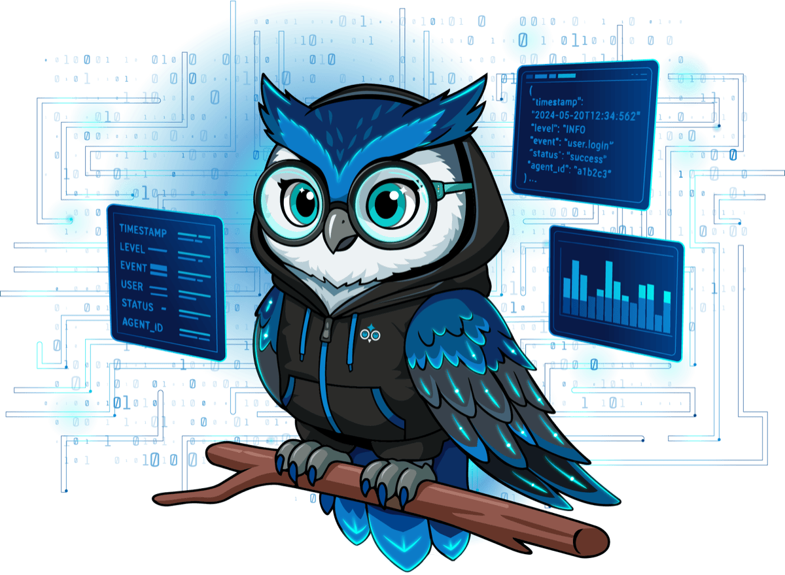

See exactly what your
agents are doing.
An open-source telemetry SDK for AI agents. Observra captures what your agents do — model calls, tool use, cost, errors — converts it into one common event format, and routes it to the observability and security tools you already use.
Answer: "what happened, how much did it cost, and was it normal?"

Why Observra
One telemetry layer for every agent framework.
Every agent framework exposes different callbacks, metadata, and event formats. Monitoring each one means custom integrations — and they get harder to maintain as your agent fleet grows.
Observra is one open telemetry layer across frameworks: it captures key agent activity, translates it into a consistent schema, and routes it to the systems your teams already use — so developers, platform, and security teams work from the same record of agent behavior.
Build faster
Add telemetry without writing custom logging for every agent or framework.
See cost and risk
Token cost, latency, errors, and risky tool calls and handoffs — surfaced per agent session for cost control and security review.
Use your existing tools
Send normalized events to OpenTelemetry, webhooks, local storage, SIEMs, and observability platforms.
System architecture
Four layers. One clean pipeline.
Observra instruments your agent framework through a four-stage pipeline. Each stage is independent, testable, and pluggable.
Agent Code
Your agent runs unmodified — ADK, Claude, OpenAI Agents, LangGraph, and Pydantic AI all emit framework callbacks automatically.
Adapter Layer
Framework-specific adapters intercept callbacks and translate them into normalized events — no per-agent code required.
Core Pipeline
CIM normalization, deduplication, PII redaction, and per-session cost calculation happen in sequence before any backend sees the event.
Backend Layer
Enriched events are routed to JSONL, Webhook, OTel Spans, OTel Logs, or any combination via MultiBackend fan-out.
Framework support
Five frameworks. One SDK.
Install only the extras you need. Each adapter is independently versioned and tested against its minimum framework version.
Key features
Everything the pipeline needs. Nothing it doesn't.
All built into the core SDK — no sidecar, no daemon, no infrastructure changes required.
-
Cost tracking Per-session cost with a model-specific pricing catalog and configurable threshold alerts for runaway LLM spend.
-
PII redaction Automatic secret and PII masking on by default, with configurable patterns for org-specific tokens and credentials.
-
Non-blocking pipeline Drop-oldest queue guarantees zero latency impact on the host agent, even under backpressure.
-
CIM-normalized events All events conform to the Common Information Model schema before reaching any backend — SIEM-ready out of the box.
-
Prompt injection detection Built-in heuristics flag injection attempts in the event stream, annotating events so downstream consumers can act on them.
-
Encryption at rest Optional AES line-level encryption for sensitive telemetry in the JSONL backend via the
[encryption]extra. -
Deduplication Automatic event dedup across backends ensures no duplicate records reach SIEM or observability pipelines.
-
Pipeline self-observability
get_metrics()exposes drop count, queue depth, and write latency — expose via/healthfor alerting.
{
"timestamp": 1718115781.882,
"event_type": "model_response",
"framework": "adk",
"agent_name": "research-agent",
"model_name": "gemini-2.0-flash",
"session_id": "s-a1f6c2e3",
"library_version": "1.0.3",
"data": {
"input_tokens": 1240,
"output_tokens": 387,
"cost_usd": 0.0019,
"action": "call_llm",
"result": "success"
}
}
// pipeline health
{
"drop_count": 0,
"queue_depth": 2,
"write_latency_p99": 0.018,
"backend_write_success": 1547
}
streaming · 22 events/sec · $0.0019/session
Backend layer
Route events anywhere.
Every backend receives the same TelemetryEvent dataclass. Switch or combine with zero changes to your agent code.
data{} dict preserved. Works air-gapped.gen_ai.* semantic conventions.Compatible platforms
Installation & quick start
Up and running in three steps.
Install the base package, add the extras for your frameworks and backends, and initialize once at app startup.
Install the base package
Requires Python 3.10+. Base install includes JSONL, Webhook, and MultiBackend.
Add the extras you need
Frameworks — [adk], [claude], [openai-agents], [langchain], [pydantic-ai]; backends — [otel], [exabeam]; or grab [all].
Initialize once at startup
Call observra.initialize() once, then record events — the rest of the pipeline runs in the background.
Ship agents you can actually see.
Observra runs at dev time and in production — open source, built for transparency, nothing phones home.